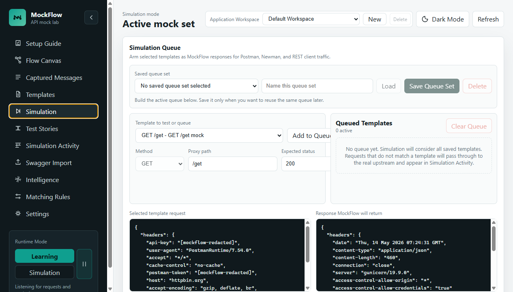
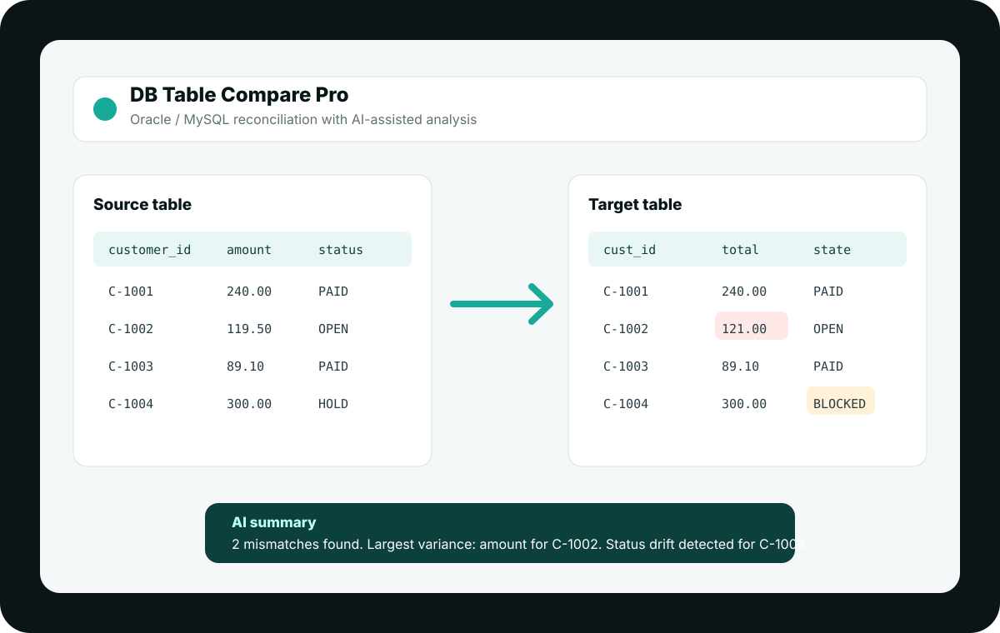
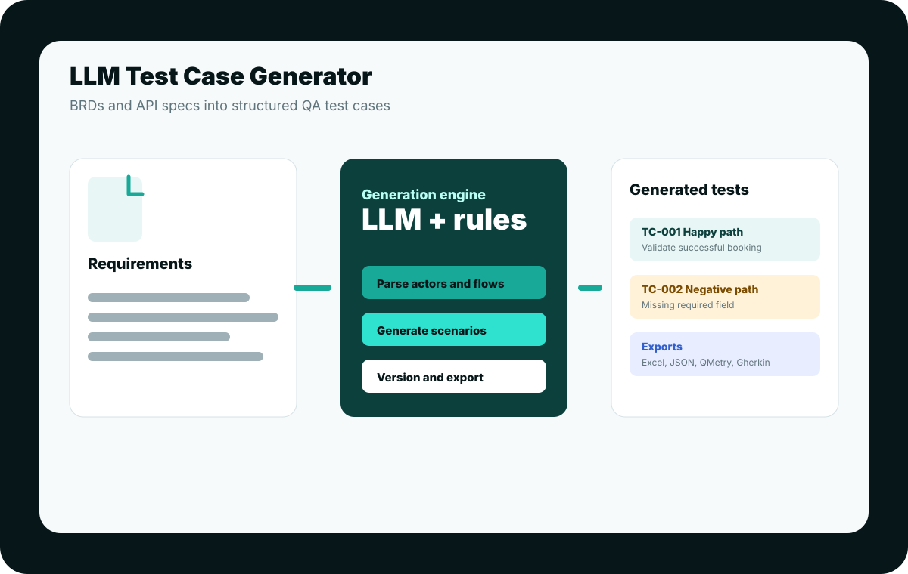
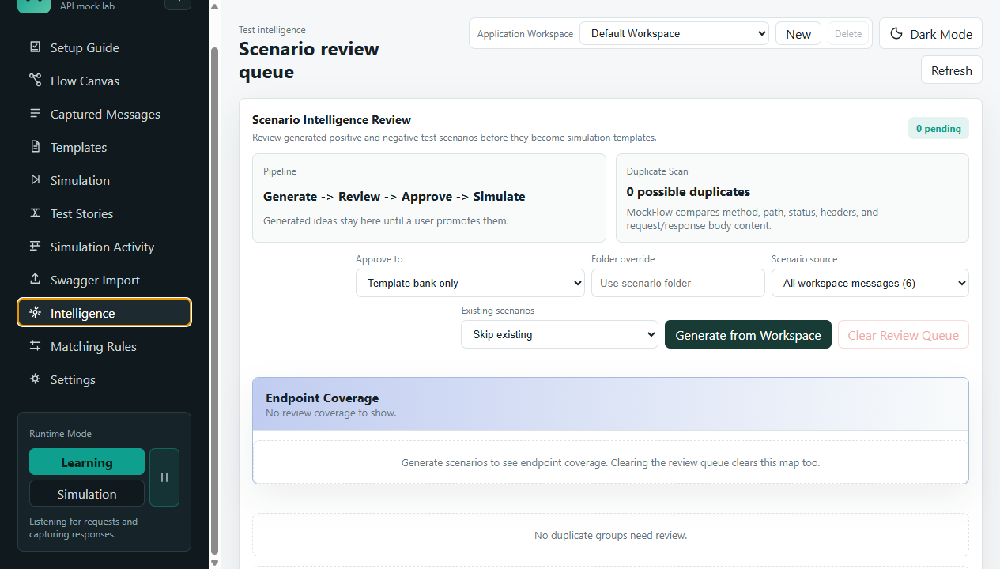

MockFlow
Local API capture, templating, and mock simulation for Postman-driven testing.
API Testing
QA automation, AI testing, and data validation
Tools that remove test bottlenecks.
A portfolio of practical engineering tools built around API simulation, database reconciliation, and AI-assisted test case generation. The source code can stay private; the product thinking, architecture, and user workflows can still be shown clearly.
DB Table Compare Pro
Oracle/MySQL reconciliation with mapping, batching, rules, and AI summaries.
Data QA
LLM Test Case Generator
Turns BRDs and API specs into structured, exportable software test cases.
AI QA
Featured tools
Three products, one testing theme.
Each project targets a different testing bottleneck: unavailable APIs, unreliable data comparisons, and slow test case authoring.

MockFlow
A local-first API proxy and mock workbench that captures real traffic, promotes messages into templates, and simulates API responses for Postman and REST clients.

DB Table Compare Pro
A Streamlit tool for reconciling source and target tables across Oracle/MySQL, with custom mappings, per-column rules, batch strategies, and AI-assisted mismatch summaries.

LLM Test Case Generator
A Streamlit application that parses BRDs or YAML API specs and generates structured test cases with history, filtering, and exports for JSON, Excel, QMetry, and Gherkin.
Case studies
Built around real QA workflows.
The strongest portfolio story is not just that these tools exist. It is that each one turns a painful testing workflow into a repeatable product experience.
MockFlow
Simulate APIs before every downstream service is ready.
MockFlow acts as a local middleware lab for API teams. It captures request/response traffic in learning mode, converts messages into editable templates, and responds from selected templates in simulation mode.
- Supports capture, template editing, active simulation queues, matching diagnostics, and dynamic response variables.
- Imports OpenAPI and Postman collections to speed up contract-first testing.
- Includes AI-assisted scenario generation and duplicate governance provisions.

DB Table Compare Pro
Compare enterprise tables without manual spreadsheet drift checks.
This tool helps teams validate source and target datasets across different database engines, schema names, and transformation rules.
- Handles key selection, custom mapping, filtering, batch processing, and per-column comparison rules.
- Supports Oracle and MySQL with a Streamlit interface for analysts and testers.
- Uses local LLMs to summarize mismatches and help users reason about data quality issues.
LLM Test Case Generator
Turn requirements and API specs into reviewable test cases.
LLM_TCG shortens the gap between requirements and executable QA assets by parsing documents and producing structured test cases that can be reviewed, versioned, and exported.
- Accepts BRD documents and YAML API specifications.
- Maintains history/versioning through SQLite.
- Exports to JSON, Excel, QMetry CSV, and Gherkin JSON.
What this demonstrates
Product thinking plus hands-on implementation.
These tools show practical experience across the QA lifecycle, from requirements analysis to API simulation and database validation.
Testing workflows
API mocking, scenario generation, regression support, data reconciliation, and export-ready test assets.
Human-in-the-loop tooling
AI assists with scenarios, summaries, and generation while users keep control of approval and edits.
Local-first systems
Python backends, Streamlit apps, browser dashboards, local storage, optional cloud sync, and desktop agent direction.
Non-technical users
Wizard-like setup, visual queues, diagnostics, feedback states, and clean dashboards for repeated tester workflows.
Roadmap
Where the portfolio goes next.
Public portfolio site
Static GitHub Pages site with safe summaries, screenshots, architecture notes, and private-source positioning.
Project-specific pages
Add deeper pages for each tool with architecture diagrams, sanitized demos, and short product videos.
Downloadable demos
Publish packaged local agents or sanitized demo builds where licensing and data safety are ready.
Recruiter-friendly note
Private source, public product story.
This site is designed to showcase the thinking, workflows, architecture, and UI direction behind the tools without exposing implementation details or sensitive local data.